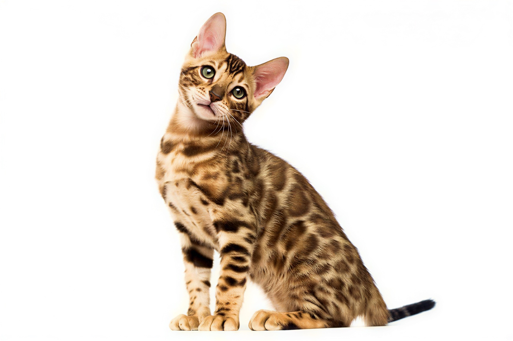

Bengal
Popular for their wild-looking spotted coat and energetic, playful nature.


Persian
Known for their long, fluffy fur and calm, sweet temperament.

Scottish Fold
Famous for their folded ears, round face, and calm nature.
Known for their short ticked coat, active personality, and strong curiosity.
Recognized for their short “bobbed” tail and dog-like loyalty.
Famous for their unique ears that curl backward and their friendly nature.
Known for their sturdy build, calm temperament, and excellent hunting skills.
Identified by their unusual wiry coat and relaxed personality.
Known for being highly adaptable, energetic, and well suited to hot climates.
Recognized for their sleek body, expressive eyes, and affectionate personality.
Known for their spotted or marbled coat and gentle, family-friendly nature.
Known for their silky coat, elegant body, and talkative personality.
Recognized for their hairless body, short legs, and playful behavior.

Known for their spotted coat and energetic nature.
Known for their striking blue eyes, silky coat, and gentle temperament.
Recognized for their sleek black coat and bright copper eyes.
Known for their plush long coat and calm, affectionate personality.
Famous for their round face, dense coat, and easygoing nature.
Known for their sleek coat, expressive eyes, and affectionate personality.
Recognized for their shimmering silver coat and playful temperament.
Known for their blue-gray coat, quiet voice, and intelligent nature.
Recognized for their wild appearance, athletic build, and energetic personality.
Known for their curly coat, slender body, and playful energy.
Recognized for their long coat and naturally tailless or short-tailed body.
Known for their wavy coat, large ears, and mischievous personality.
Recognized for their hairless body and affectionate nature.
Known for their naturally occurring Chinese origin and distinctive striped coat.
Famous for being one of the few naturally spotted domestic cats and for their speed.
Known for their sturdy build and balanced, adaptable temperament.
Recognized for their Persian-like face but with a short, plush coat.
Known for their rich chocolate-brown coat and bright green eyes.
Recognized for their curled ears, bobbed tail, and playful personality.
Known for their long coat, blue eyes, and color-point pattern.
Famous for their short pom-pom tail and lively, friendly personality.
Known for their pure white coat and striking odd-colored eyes.
Recognized for their silver-blue coat and heart-shaped face.
Known for their curly coat and affectionate personality.
Recognized for their sparse “werewolf-like” coat and curious nature.

Famous for their large size, bushy tail, and gentle “gentle giant” personality.
Known for their naturally tailless body and strong hind legs.
Recognized for their short legs, sparse coat, and affectionate temperament.
Known for their short legs and playful personality.
Known for their short legs, round face, and sweet temperament.
Recognized for their thick water-resistant coat and strong climbing ability.
Known for their wild-looking spotted coat but friendly domestic personality.
Recognized for their sleek body, large ears, and wide variety of coat colors.

Known for their long, fluffy fur and sweet temperament.
Recognized for their hairless or fine coat and elegant slender body.
Known for their bobbed tail, spotted coat, and wild bobcat-like appearance.
Known for their plush coat and calm, affectionate personality.
Famous for thei blue eyes and tendency to go limp when held.
Recognized for their dense blue-gray coat and bright green eyes.
Known for their tall, slender build and wild several-like appearance.
Famous for their folded ears and round face.
Recognized for their thick curly coat and relaxed personality.

Known for their color-point coat, blue eyes, and voal personality.
Recognized for their thick triple coat and strong, athletic body.
Known for being one of the smalles cat breed and their large expressive eyes.
Recognized for their white "snow-boot" paws and color-point pattern.
Known for their rare African origin and distinctive marbled coat.
Famous for their hairless body and affectionate personality.
Known for their traditional Siamese appearance and social personality.
Recognized for their silky coat and playful, affectionate nature.
Known for their tiger-like striped coar and mascular buils.
Recognized for their sliky coat and graceful, elegant body.
Known for their semi-long coat and love of swimming.